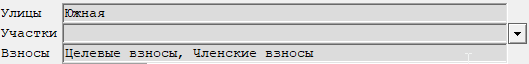
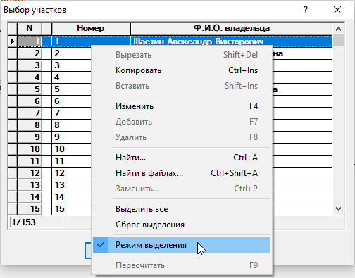
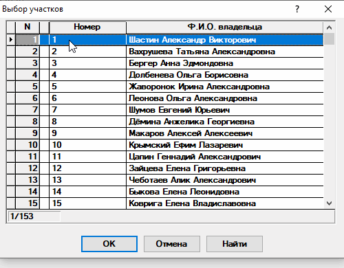
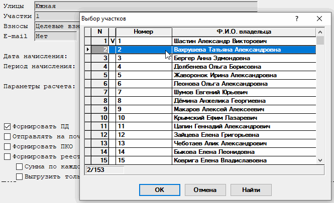

Графы множественного выбора
Некоторые бланки программы содержат графы, которые позволяют выбирать произвольное количество записей.
Данные графы имеют свои особенности при работе с ними. Так, если графа не заполнена, то это значит, что будут обработаны все объекты. Если же графа заполнена, то обработаны будут только выбранные объекты.
Рассмотрим работу с ними на примере бланка "Начисление членских и целевых взносов". Бланк содержит 3 графы множественного выбора. Это Улицы, Участки и Взносы(рис. 1).

Рис. 1. Графы бланка "Начисление членских и целевых взносов".Графы могут быть связаны друг с другом по смыслу. Например, Улицы и Участки. В работе с такими графами есть свои особенности:
- Если графы Улицы и Участки не заполнены, то обработаны будут все участки по всем улицам.
- Если необходимо обработать один или несколько участков, то выбирать улицы нет необходимости.
- Если же надо обработать одну или несколько улиц целиком, то необходимо выбрать интересующие улицы. Участки уже выбирать не надо, так как в выборку попадут все участки с выбранных улиц.
- Если выбрана улица и участок, который не относится к этой улице, то в выборку ничего не попадёт. Будьте внимательны при выборе в связанных графах.
Аналогичным образом можно провести связь с графой Взносы
Рассмотрим подробнее работу с режимами выделения на примере графы Участки.
Возможно выделение как нескольких записей, так и одной. За переключение между этими режимами отвечает опция Режим выделения контекстного меню(клик правой кнопкой "мыши")(рис. 2). Чтобы включить или выключить режим выделения нескольких записей, необходимо установить соответствующее значение у этой опции.

Рис. 2. Контекстное меню выбораРассмотрим случай, когда режим выделения включен. Для выделения записи необходимо сделать двойной клик левой кнопкой мыши по ней или нажать кнопку Enter на клавиатуре. После этого слева от записи появится символ V, наличие которого означает, что запись выбрана(рис. 3).

Рис. 3. Выбор нескольких записейРассмотрим случай, когда режим выделения выключен. Для выделения записи необходимо сделать двойной клик левой кнопкой мыши по ней или нажать кнопку Enter на клавиатуре. После этого окно выбора автоматически закроется. При последующих выборах сброс ранее выделенных записей не осуществляется(рис. 4).

Рис. 4. Выбор одной записиТакже имеются опции Выделить все и Сброс выделения. Они позволяют установить или убрать выделение у всех записей(рис. 5).
После нажатия на кнопку ОК в окне выбора при любом режиме выделения в графе через запятую отобразятся все выделенные значения.
Аналогичным образом осуществляется работа с остальными графами данного типа.